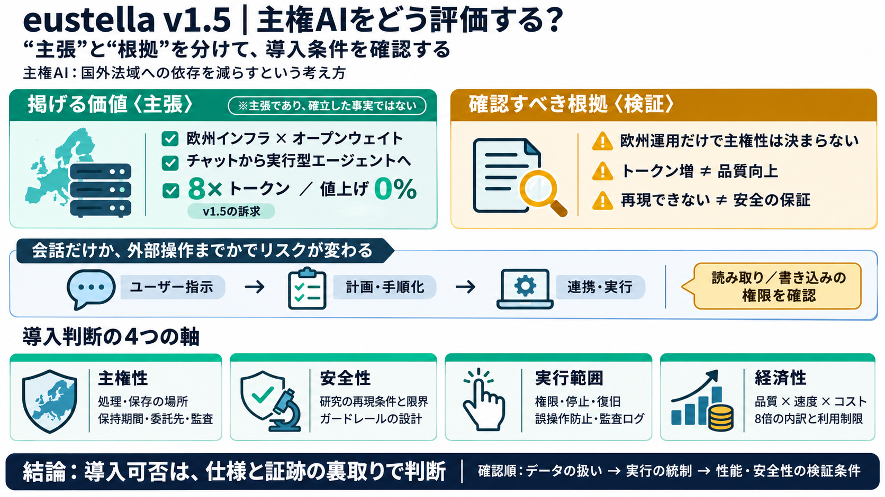

WE ARE LIVE: eustella Launches Europe’s First Fully Sovereign AI Agent Platform
eustella builds on open-weights models and thereby retains full technological control. eustella operates the AI models i…

eustellaの「主権（ソブリン）型AIエージェント」構想を、主張（マーケ）と根拠（検証/研究）を分けて整理します。
「エージェントが何を実行するか（会話だけ/連携・操作まで）」でリスクと価値が変わります。
主権性・安全性・価格性は、Trust Center/Privacy/ベンチ詳細など一次資料の確認が必須です。
eustellaは「欧州のChatGPT/Claude/Gemini代替」として、欧州インフラとオープンウェイトモデル中心でデータ依存を終わらせることを目標にします。
チャット + エージェント（計画・実行）
国外法域の到達リスクを低減
オープンウェイト中心（例: Gemma 4 / Qwen 3.5-3.7等）
主権AIは「欧州インフラ」だけでは判断できず、保存場所・保持期間・委託先・監査方法までがセットで問われます。
欧州の運用・法の遵守を強調（ただし詳細はFAQ等に委ねられることがある）
Trust Center / Privacy / 規約 / Sub-Processors / ログと監査の手順
Version 1.5では「トークンを8倍にしつつ0%値上げ」を打ち出し、同一価格での長文処理・出力量増を狙うとしています。
同じモデル・同じ欧州インフラ・最適化で「8倍のトークン増」
最適化の内訳（推論/サービング/制限）が不明だと、品質・速度・安全性のトレードオフは不確定
eustellaは単なるチャットでなく、旅行計画・暗号資産管理・プロ向けプレゼン生成など「実行を伴う」例を掲げています。
ユーザー指示（会話）
タスク計画（計画→手順化）
実行/連携（外部サービスの利用が想定される）
Qwen系で観測された疑わしい挙動について、再現できなかった点と、大規模ログ（40万件以上）を分析した旨が言及されています。
再現/検証を試み、ログ分析まで踏み込む姿勢
再現条件・粒度・閾値・統計的解釈が不明だと、結論の強さが読みづらい
提示情報だけでは、ベンチマーク手法、データ保持の具体、そして「エージェントがどこまで実行するか」の細仕様がFAQ側に残っています。
計算/サービングの最適化、品質指標、ログ取り扱いの粒度
権限管理・誤操作防止・監査ログ・連携先の範囲
導入判断は、主権性・安全性・実行範囲・経済性の4観点で切り分けるのが確実です。
処理/保存/委託/監査が欧州でどう制御されるか（条文×運用）
研究の再現条件・検出の限界・ガードレールの設計
連携・操作の権限、停止/復旧、監査ログの実装
0%値上げ“で8×”の内訳を、品質/速度/コスト当たり性能で確認
eustellaを比較するなら、まずTrust Center/Privacy/規約、次にSub-Processorsとログ、最後にベンチ詳細と研究手法を見ます。
保存場所・保持期間・委託先（Sub-Processors）・監査の仕組み
エージェント権限（read/write等）、停止手段、誤操作時の復旧
ベンチ手法/条件・品質指標・安全性研究の再現条件と限界
報道ベースでは、サーバーがドイツのIONOS CLOUDなど欧州データセンターで提供され、処理はEU域内を志向する趣旨が紹介されています。
欧州インフラ + オープンウェイトモデル（Gemma/Qwen/Mistral/Flux等）
志向（意図）と実装（実際の保存/アクセス/委託範囲）は別問題
eustellaは主権・安全性・実行型エージェントを軸に競争しようとしている一方、適合根拠と実行統制の詳細が読み取りにくいため、一次資料での裏取りが必要です。
v1.5の定量訴求（8×トークン）と、安全性研究トピックで説得力を補強
主権性・価格性・安全性・実行範囲の「仕様と証跡」が抜粋だけでは不足
以下は、今回の抜粋で断定が難しい領域を埋めるための確認先です（URLは手元資料に合わせて差し替え）。
Trust Center / Privacy Policy / Terms of Service / Sub-Processors
Security & Safetyページ / 監査・ログ設計 / エージェント権限とガードレール
ベンチマーク詳細（手法・条件）/ コスト当たり性能（品質×速度）
Qwen挙動調査の元記事（再現条件、ログ粒度、閾値、統計的解釈）
eustella builds on open-weights models and thereby retains full technological control. eustella operates the AI models i…
Developed by newsrooms.ai in Vienna, it offers data hosting entirely in Europe using IONOS servers. It uses open weight…
As one of around 5,000 beta users, we already tested eustella from the Vienna startup newsroom.ai (see our hands-on repo…
# eustella ID: t2YGIm8c9tIe Website: www.eustella.com LinkedIn: www.linkedin.com/company/eustella · 938 followers Indust…
Bitpanda is a financial services company headquartered in Vienna, Austria. It runs an investment platform that allows us…